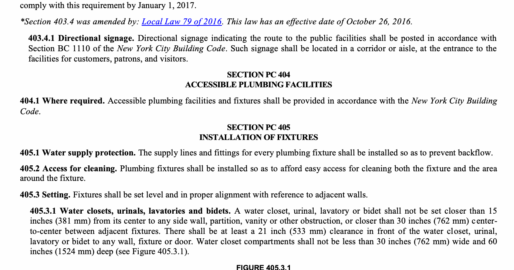

This chapter shall govern the materials, design and installation of plumbing fixtures, faucets and fixture fittings in accordance with the type of occupancy, and shall provide for the minimum number of fixtures for various types of occupancies.
Water closets having a concealed trap seal or an unventilated space or having walls that are not thoroughly washed at each discharge in accordance with ASME A112.19.2M shall be prohibited. Any water closet that permits siphonage of the contents of the bowl back into the tank shall be prohibited. Trough urinals shall be prohibited.
The maximum water flow rates and flush volume for plumbing fixtures and fixture fittings shall comply with Section 604.4.
Plumbing fixtures shall be constructed of approved materials, with smooth, impervious surfaces, free from defects and concealed fouling surfaces, and shall conform to standards cited in this code. All porcelain enameled surfaces on plumbing fixtures shall be acid resistant.
Materials for specialty fixtures not otherwise covered in this code shall be of stainless steel, soapstone, chemical stoneware or plastic, or shall be lined with lead, copper-base alloy, nickel-copper alloy, corrosion-resistant steel or other material especially suited to the application for which the fixture is intended.
Sheet copper for general applications shall conform to ASTM B 152 and shall not weigh less than12 ounces per square foot (3.7 kg/m2).
Sheet lead for pans shall not weigh less than 4 pounds per square foot (19.5 kg/m2) coated with an asphalt paint or other approved coating.
Plumbing fixtures shall be provided for the type of occupancy and in the minimum number shown in Table 403.1. Types of occupancies not shown in Table 403.1 shall be considered individually by the commissioner. The number of occupants shall be determined by the New York City Building Code. Occupancy classification shall be determined in accordance with the New York City Building Code.
| NO. | CLASSIFICATION | OCCUPANCYi | DESCRIPTION | WATER CLOSETS URINALS (SEE SECTION 419.2) | LAVATORIES | BATHTUBS/ SHOWERS | DRINKING FOUNTAIN (SEE SECTION 410.1)e,f | OTHER | ||
|---|---|---|---|---|---|---|---|---|---|---|
| MALE | FEMALE | MALE | FEMALE | |||||||
| 1 | Assembly | A-1d | Theaters and other buildings for the performing arts and motion pictures | 1 per 70 for the first 210 and 1 per 125 for the remainder exceeding 210 | 1 per 35 for the first 210 and 1 per 65 for the remainder exceeding 210 | 1 per 200 | — | 1 per 500 | 1 service sink | |
| A-2d | Nightclubs, barsg, taverns, dance halls and buildings for similar purposes | 1 per 75 j | 1 per 40 j | 1 per 75 | — | 1 per 500 | 1 service sink | |||
| Restaurantsh, banquet halls and food courts | 1 per 75 | 1 per 75 | 1 per 200 | — | 1 per 500 | 1 service sink | ||||
| A-3d | Auditoriums without permanent seating, art galleries, exhibition halls, museums, lecture halls, libraries, arcades and gymnasiums | 1 per 70 for the first 210 and 1 per 125 for the remainder exceeding 210 | 1 per 35 for the first 210 and 1 per 65 for the remainder exceeding 210 | 1 per 200 | — | 1 per 500 | 1 service sink | |||
| Passenger terminals and transportation facilities | 1 per 500 | 1 per 500 | 1 per 750 | — | 1 per 1,000 | 1 service sink | ||||
| Places of worship and other religious services. | 1 per 150 | 1 per 75 | 1 per 200 | — | 1 per 1,000 | 1 service sink | ||||
| A-4 | Coliseums, arenas, skating rinks, pools and tennis courts for indoor sporting events and activities | 1 per 75 for the first 1,500 and 1 per 120 for the remainder exceeding 1,500 | 1 per 40 for the first 1,500 and 1 per 60 for the remainder exceeding 1,500 | 1 per 200 | 1 per 150 | — | 1 per 1,000 | 1 service sink | ||
| A-5 | Stadiums, amusement parks, bleachers and grandstands for outdoor sporting events and activities | 1 per 75 for the first 1,500 and 1 per 120 for the remainder exceeding 1,500 | 1 per 40 for the first 1,520 and 1 per 60 for the remainder exceeding 1,520 | 1 per 200 | 1 per 150 | — | 1 per 1,000 | 1 service sink | ||
| 2 | Business | Bk | Buildings for the transaction of business, professional services, other services including merchandise, office buildings, banks, light industrial and similar uses | No. of persons No. of for each sex fixtures 1-20 1 2 1-45 2 46-70 3 7 1-100 4 101-140 5 141-190 6 1 fixture for each additional 50 persons | No. of persons No. of for each sex fixtures 1-25 1 26-50 2 51-75 3 76-115 4 116-160 5 1 fixture for each additional 60 persons | — | 1 per 100 | 1 service sink | ||
| 3 | Educational | E | Educational facilities | 1 per 50 | 1 per 50 | — | 1 per 100 | 1 service sink |
Where separate fixture ratios are provided to male and female individually in Table 403.1, the total occupant load shall first be divided in half before the corresponding fixture ratio is applied individually to each sex. Where a single fixture ratio is provided to the total occupant load in Table 403.1, such ratio shall be applied to the total occupant load including both male and female before dividing the resulting number of fixtures equally between male and female. Fractional numbers resulting from applying the fixture ratios of Table 403.1 shall be rounded up to the next whole number. For calculations involving multiple occupancies, such fractional numbers for each occupancy shall first be summed and then rounded up to the next whole number. Fixture calculations in Group B office occupancies shall utilize the total occupant load on a given floor to determine the number of fixtures required for that floor.
Exception: The total occupant load shall not be required to be divided in half where approved statistical data indicates a distribution of the sexes of other than 50 percent of each sex.
Fixtures located within family or assisted-use toilet and bathing rooms required by Section 1109.2.1 of the New York City Building Code are permitted to be included in the number of required fixtures for either the male or female occupants in assembly and mercantile occupancies.
Fixtures located within single-occupant toilet rooms are permitted to be included in the number of fixtures required by Section 403, or where applicable the 1968 Building Code, for either the male or the female occupants. Fixtures located within toilet rooms subject to the exception of Section 403.2.1 are permitted to be included in the number of fixtures required by Section 403, or where applicable the 1968 Building Code, only for that sex.
*Section 403.1.3 was added by: Local Law 79 of 2016. This law has an effective date of October 26, 2016. Structures in which Factory and occupants are engaged (see Section 4 industrial F-1 and F-2 in work fabricating, 1 per 100 1 per 100 411) 1 per 400 1 service sink assembly or processing of products or materials
I-1m Residential care 1 per 10 1 per 10 1 per 8 1 per 100 1 service sink
Hospital ambulatory 1 per roomc 1 per roomc 1 per 15 1 per 100 1 service sink per nursing home patients floor I-2 Employees, other than 1 per 25 1 per 35 — 1 per 100 — residential careb
Visitors, other than 1 per 75 1 per 100 — 1 per 500 — residential care 5 Institutional Prisonsb 1 per cell 1 per cell 1 per 15 1 per 100 1 service sink
Reformatories, I-3 detention centers and 1 per 15 1 per 15 1 per 15 1 per 100 1 service sink correctional centers Employeesb 1 per 25 1 per 35 — 1 per 100 —
Adult day care and I-4 1 per 15 1 per 15 1 per 15 1 per 100 1 service sink Childcare
Retail stores, service 6 Mercantile M stations, shops, 1 per 500 1 per 750 — 1 per 1,000 1 service sink salesrooms, markets and shopping centers Hotels, motels, R-1m boarding houses 1 per guestroom 1 per guestroom 1 per — 1 service sink guestroom (transient)
Dormitories, R-1m fraternities, sororities 1 per 10 1 per 10 1 per 8 1 per 100 1 service sink and boarding houses (not transient)
1 kitchen sink per dwelling 1 per unit; 1 R-2m Apartment house 1 per dwelling unit 1 per dwelling unit dwelling — automatic unit clothes washer 7 Residential connection per 20 dwelling units
1 kitchen sink per dwelling unit; 1 One- and two-family 1 per automatic R-3 dwellings 1 per dwelling unit 1 per dwelling unit dwelling unit — clothes washer connection per dwelling unit Congregate living R-3m facilities with 16 or 1 per 10 1 per 10 1 per 8 1 per 100 1 service fewer persons sink
Structures for the storage of goods, warehouses, See Section 8 Storage S-1 and S-2 storehouse and freight 1 per 100 1 per 100 411 1 per 1,000 1 service sink depots. Low and moderate hazard
a. The fixtures shown are based on one fixture being the minimum required for the number of persons indicated. Any fraction of the number of persons requires an additional fixture. The number of occupants shall be determined by the New York City Building Code.
b. Toilet facilities for employees shall be separate from facilities for inmates or patients.
c. A single-occupant toilet room with one water closet and one lavatory serving not more than two adjacent patient sleeping units shall be permitted where such room is provided with direct access from each patient sleeping unit and with provisions for privacy.
d. The occupant load for seasonal outdoor seating and entertainment areas shall be included when determining the minimum number of facilities required.
e. The minimum number of required drinking fountains shall comply with Table 403.1 and Chapter 11 of the New York City Building Code.
f. Drinking fountains are not required for an occupant load of 15 or fewer.
g. For the purposes of this table only, “Bar” shall mean a business establishment or a portion of a nonprofit entity devoted primarily to the selling and serving of alcoholic beverages for consumption by the public, guests, patrons, or members on the premises and in which the serving of food is only incidental.
h. The total number of occupants for a single establishment comprising of a restaurant with an accessory bar shall be considered as a restaurant for the purposes of determining the minimum number of plumbing fixtures.
i. As per the New York City Building Code.
j. *The requirements for the number of water closets for a total occupancy of 150 persons or fewer shall not apply to bars except that, subject to the requirements of Section 403.2.1, there shall be at least one water closet for men and at least one water closet for women or at least two single-occupant toilet rooms.
k. The number of fixtures for building or nonaccessory tenant space used for assembly purposes by fewer than 75 persons and classified as Group B occupancy in accordance with Section 303.1, Exception 2 of the New York City Building Code shall be permitted to be calculated in accordance with the requirements for Assembly occupancies.
m. In addition to the requirements of Table 403.1, residential occupancies I-1, R-1, R-2, and R-3 shall provide fixtures in compliance with the requirements of Section PC 614 for emergency drinking water access.
*Table 403.1 was amended by: Local Law 79 of 2016. This law has an effective date of October 26, 2016.
Where plumbing fixtures are required, separate facilities shall be provided for each sex.
Exceptions:
1. Separate facilities shall not be required for dwelling units and sleeping units.
2. In structures or tenant spaces where combined employee and public toilet facilities are provided in accordance with Section 403.3, separate facilities shall not be required where the total number of employees, customers, patrons and visitors is 30 or fewer.
3. In structures or tenant spaces where required toilet facilities for only employee use are provided in accordance with Section 403.3, separate facilities shall not be required where the total number of employees is 30 or fewer.
4. In structures or tenant spaces where required toilet facilities for only public use are provided in accordance with Section 403.3, separate facilities shall not be required where the total number of customers, patrons and visitors is 30 or fewer.
All single-occupant toilet rooms shall be made available for use by persons of any sex. Existing toilet rooms shall comply with this section by no later than January 1, 2017. Nothing in this section shall be construed to affect or alter the number of toilet rooms in a building otherwise required pursuant to this code or where applicable the 1968 Building Code.
Exception: Where egress from a single-occupant toilet room is through a room permissibly restricted by sex.
*Section 403.2.1 was added by: Local Law 79 of 2016. This law has an effective date of October 26, 2016.
Employees shall be provided with toilet facilities in all occupancies. The number of plumbing fixtures located within the required employee toilet facilities shall be provided in accordance with Section PC 403 for all employees. Customers, patrons and visitors shall be provided with public toilet facilities in structures and tenant spaces intended for public utilization. The number of plumbing fixtures located within the required public toilet facilities shall be provided in accordance with Section PC 403 for all customers, patrons and visitors. Employee and public toilet facilities may be separate or combined. Where combined facilities are provided, the number of plumbing fixtures shall be in accordance with Section PC 403 for all users.
Exception: Public utilization of toilet facilities shall not be required for:
1. Food service establishments, as defined in Section 81.03 of the New York City Health Code, with a seating capacity of less than 20, provided such establishments are less than 10,000 square feet (929 m2).
2. Establishments less than 10,000 square feet (929 m2) classified as Occupancy Group B or M pursuant to Sections 304.1 and 309.1 of the New York City Building Code, respectively, provided however that this exception shall not apply to a building or nonaccessory tenant space used for assembly purposes by fewer than 75 persons and classified as Group B occupancy in accordance with Section 303.1, Exception 2 of the New York City Building Code.
The route to the public toilet facilities required by Section 403.3 shall not pass through kitchens, storage rooms or closets. Access to the required facilities shall be from within the building or from the exterior of the building. All routes shall comply with the accessibility requirements of the New York City Building Code. Employees, customers, patrons and visitors shall have access to the required toilet facilities at all times that the building is occupied.
In occupancies other than covered mall buildings, the required public and employee toilet facilities shall be located not more than one story above or below the space required to be provided with toilet facilities, and the path of travel to such facilities shall not exceed a distance of 500 feet (152 m).
Exception: The location and maximum travel distances to required employee facilities in factory and industrial occupancies are permitted to exceed that required by this section, provided that the location and maximum travel distance are approved by the department.
In covered mall buildings, the required public and employee toilet facilities shall be located not more than one story above or below the space required to be provided with toilet facilities, and the path of travel to such facilities shall not exceed a distance of 300 feet (91 440 mm). In covered mall buildings, the required facilities shall be based on total square footage, and facilities shall be installed in each individual store or in a central toilet area located in accordance with this section. The maximum travel distance to central toilet facilities in covered mall buildings shall be measured from the main entrance of any store or tenant space. In covered mall buildings, where employees’ toilet facilities are not provided in the individual store, the maximum travel distance shall be measured from the employees’ work area of the store or tenant space.
Where pay facilities are installed, such facilities shall be in excess of the required minimum facilities. Required facilities shall be free of charge.
Required public facilities shall be designated by a legible sign for each sex or for a single-occupant toilet room, for all sexes. Signs shall be readily visible and located near the entrance to each toilet facility. Existing single-occupant toilet rooms shall comply with this requirement by January 1, 2017.
*Section 403.4 was amended by: Local Law 79 of 2016. This law has an effective date of October 26, 2016.
Directional signage indicating the route to the public facilities shall be posted in accordance with Section BC 1110 of the New York City Building Code. Such signage shall be located in a corridor or aisle, at the entrance to the facilities for customers, patrons, and visitors.
Accessible plumbing facilities and fixtures shall be provided in accordance with the New York City Building Code.
The supply lines and fittings for every plumbing fixture shall be installed so as to prevent backflow.
Plumbing fixtures shall be installed so as to afford easy access for cleaning both the fixture and the area around the fixture.
Fixtures shall be set level and in proper alignment with reference to adjacent walls.
A water closet, urinal, lavatory or bidet shall not be set closer than 15 inches (381 mm) from its center to any side wall, partition, vanity or other obstruction, or closer than 30 inches (762 mm) center-to-center between adjacent fixtures. There shall be at least a 21 inch (533 mm) clearance in front of the water closet, urinal, lavatory or bidet to any wall, fixture or door. Water closet compartments shall not be less than 30 inches (762 mm) wide and 60 inches (1524 mm) deep (see Figure 405.3.1).
For SI: 1 inch = 25.4 mm.

In employee and public toilet rooms, the required lavatory shall be located in the same room as the required water closet.
Connections between the drain and floor outlet plumbing fixtures shall be made with a floor flange. The flange shall be attached to the drain and anchored to the structure. Connections between the drain and wall-hung water closets shall be made with an approved closet carrier fitting. The water closet shall be bolted to the carrier with corrosion-resistant bolts or screws. Joints shall be sealed with an approved elastomeric gasket, wax ring seal, flange-to-fixture connection complying with ASME A112.4.3 or an approved setting compound.
Floor flanges for water closets or similar fixtures shall not be less than 0.125 inch (3.2 mm) thick for brass, 0.25 inch (6.4 mm) thick for plastic, and 0.25 inch (6.4 mm) thick and not less than a 2 inch (51 mm) caulking depth for cast-iron or galvanized malleable iron.
Floor flanges of hard lead shall weigh not less than 1 pound, 9 ounces (0.7 kg) and shall be composed of lead alloy with not less than 7.75 percent antimony by weight. Closet screws and bolts shall be of brass. Flanges shall be secured to the building structure with corrosion-resistant screws or bolts.
Floor outlet fixtures shall be secured to the floor or floor flanges by screws or bolts of corrosion-resistant material.
Wall-hung water closet bowls shall be supported by a concealed metal carrier that is attached to the building structure so that strain is not transmitted to the closet connector or any other part of the plumbing system. The carrier shall conform to ASME A112.6.1M or ASME A112.6.2.
Joints formed where fixtures come in contact with walls or floors shall be sealed.
In mental health centers, pipes or traps shall not be exposed, and fixtures shall be bolted through walls.
Where any fixture is provided with an overflow, the waste shall be designed and installed so that standing water in the fixture will not rise in the overflow when the stopper is closed, and no water will remain in the overflow when the fixture is empty.
The overflow from any fixture shall discharge into the drainage system on the inlet or fixture side of the trap.
Exception: The overflow from a flush tank serving a water closet or urinal shall discharge into the fixture served.
Slip joints shall be made with an approved elastomeric gasket and shall only be installed on the trap outlet, trap inlet and within the trap seal. Fixtures with concealed slip-joint connections shall be provided with an access panel or utility space at least 12 inches (305mm) in its smallest dimension or other approved arrangement so as to provide access to the slip joint connections for inspection and repair.
Integral fixture fitting mounting surfaces on manufactured plumbing fixtures or plumbing fixtures constructed on site, shall meet the design requirements of ASME A112.19.2M or ASME A112.19.3M.
All automatic clothes washers shall conform to ASSE 1007.
The water supply to an automatic clothes washer shall be protected against backflow by an air gap installed integrally within the machine conforming to ASSE 1007 or with the installation of a backflow preventer in accordance with Section PC 608.
The waste from an automatic clothes washer shall discharge through an air break into a standpipe in accordance with Section 802.4 or into a laundry sink. The trap and fixture drain for an automatic clothes washer standpipe shall be a minimum of 2 inches (51 mm) in diameter. The automatic clothes washer fixture drain shall connect to a branch drain or drainage stack a minimum of 3 inches (76 mm) in diameter. Automatic clothes washers that discharge by gravity shall be permitted to drain to a waste receptor or an approved trench drain.
Bathtubs shall conform to ANSI Z124.1, ASME A112.19.1M, ASME A112.19.4M, ASME A112.19.9M, CSA B45.2, CSA B45.3 or CSA B45.5.
Bathtubs shall have waste outlets a minimum of 1½ inches (38 mm) in diameter. The waste outlet shall be equipped with an approved stopper, and a built-in overflow shall be provided.
Windows and doors within a bathtub enclosure shall conform to the safety glazing requirements of the New York City Building Code.
Doors within a bathtub enclosure shall conform to ASME A112.19.15.
Bidets shall conform to ASME A112. 19.2M, ASME A112.19.9M or CSA B45.1.
The water supply to a bidet shall be protected against backflow by an air gap or backflow preventer in accordance with Section 608.13.1, 608.13.2, 608.13.3, 608.13.5, 608.13.6 or 608.13.8.
The discharge water temperature from a bidet fitting shall be limited to a maximum temperature of 110°F (43°C) by a water temperature limiting device conforming to ASSE 1070.
Domestic dishwashing machines shall conform to ASSE 1006. Commercial dishwashing machines shall conform to ASSE 1004 and NSF 3.
The water supply to a dishwashing machine shall be protected against backflow by an air gap or backflow preventer in accordance with Section PC 608.
The waste connection of a dishwashing machine shall comply with Sections 802.1.6 or 802.1.7, as applicable.
Drinking fountains shall conform to ASME A112.19.1M, ASME A112.19.2M or ASME A112.19.9M, and water coolers shall conform to ARI 1010. Drinking fountains and water coolers shall conform to NSF 61, Section 9. Drinking fountains required by Table 403.1 shall be equipped with both a bubbler faucet for drinking and a separate faucet designed for filling a container at least 10 inches (254 mm) in height.
Where water is served in restaurants, drinking fountains shall not be required. In other occupancies, where drinking fountains are required, up to 50 percent of required drinking fountains conforming to Section 410.1 may be substituted by dedicated plumbing fixtures with faucets designed for filling a container at least 10 inches (254 mm) in height, provided any such dedicated plumbing fixture is adjacent to or readily visible from the location of a drinking fountain conforming to Section 410.1. Bottled water dispensers shall not be substituted for required drinking fountains.
Drinking fountains and plumbing fixtures with faucets permitted to be substituted for required drinking fountains shall not be installed in public restrooms.
STATIONS
Emergency showers and eyewash stations shall conform to ISEA Z358.1.
Waste connections shall not be required for emergency showers and eyewash stations.
Floor drains shall conform to ASME A112.3.1, ASME A112.6.3 or CSA B79. Trench drains shall comply with ASME A112.6.3.
Floor drains shall have removable strainers. The strainer shall have a waterway area of not less than the area of the tailpiece. The floor drain shall be constructed so that the drain is capable of being cleaned. Access shall be provided to the drain inlet. Ready access shall be provided to floor drains.
Exception: Floor drains serving refrigerated display cases shall be provided with access.
Floor drains shall have a minimum 3-inch (76 mm) diameter drain outlet.
In public coin-operated laundries and in the central washing facilities of multiple-family dwellings, the rooms containing automatic clothes washers shall be provided with floor drains located to readily drain the entire floor area. Such drains shall have a minimum 3 inch (76 mm) diameter drain outlet and be provided with lint strainers.
Domestic food waste grinders shall conform to ASSE 1008. Food waste grinders shall not increase the drainage fixture unit load on the sanitary drainage system. Food waste grinders shall be permitted only within dwelling units.
Domestic food waste grinders shall be connected to a drain of not less than 2 inches (51 mm) in diameter.
All food waste grinders shall be provided with a supply of cold water.
The water supply to a garbage can washer shall be protected against backflow by an air gap or a backflow preventer in accordance with Section 608.13.1, 608.13.2, 608.13.3, 608.13.5, 608.13.6 or 608.13.8.
Garbage can washers shall be trapped separately. The receptacle receiving the waste from the washer shall have a removable basket or strainer to prevent the discharge of large particles into the drainage system.
Laundry trays shall conform to ANSI Z124.6, ASME A112.19.1M, ASME A112.19.3M, ASME A112.19.9M, CSA B45.2 or CSA B45.4.
Each compartment of a laundry tray shall be provided with a waste outlet a minimum of 1.5 inches (38 mm) in diameter and a strainer or crossbar to restrict the clear opening of the waste outlet.
SECTION 416 LAVATORIES
Lavatories shall conform to ANSI Z124.3, ASME A112.19.1M, ASME A112.19.2M, ASME A112.19.3M, ASME A112.19.4M, ASME A112.19.9M, CSA B45.1, CSA B45.2, CSA B45.3 or CSA B45.4. Group wash-up equipment shall conform to the requirements of Section PC 402. Every 20 inches (508 mm) of rim space shall be considered as one lavatory.
Cultured marble vanity tops with an integral lavatory shall conform to ANSI Z124.3 or CSA B45.5.
Lavatories shall have waste outlets not less than 1¼ inches (32 mm) in diameter. A strainer, pop-up stopper, crossbar or other device shall be provided to restrict the clear opening of the waste outlet. Where a stopper is utilized, a built-in overflow shall be provided.
Moveable lavatory systems shall comply with ASME A112.19.12.
Tempered water shall be delivered from public hand-washing facilities. Tempered water shall be delivered through an approved water-temperature limiting device that conforms to ASSE 1016 or ASSE 1070 or CSA B125.3.
Exception: Where point of use heaters are installed, outlet water temperature shall be regulated to provide tempered water.
Prefabricated showers and shower compartments shall conform to ANSI Z124.2, ASME A112.19.9M or CSA B45.5. Shower valves for individual showers shall conform to the requirements of Section 424.3.
Water supply risers from the shower valve to the shower head outlet, whether exposed or concealed, shall be attached to the structure. The attachment to the structure shall be made by the use of support devices designed for use with the specific piping material or by fittings anchored with screws.
Waste outlets serving showers shall be at least 2 inches (51 mm) in diameter and, for other than waste outlets in bathtubs, shall have removable strainers not less than 3 inches (76 mm) in diameter with strainer openings not less than ¼ inch (6.4 mm) in minimum dimension. Where each shower space is not provided with an individual waste outlet, the waste outlet shall be located and the floor pitched so that waste from one shower does not flow over the floor area serving another shower. Waste outlets shall be fastened to the waste pipe in an approved manner.
All shower compartments shall have a minimum of 900 square inches (0.58 m2) of interior cross-sectional area. Shower compartments shall not be less than 30 inches (762 mm) in minimum dimension measured from the finished interior dimension of the compartment, exclusive of fixture valves, showerheads, soap dishes, and safety grab bars or rails. Except as required in Section PC 404, the minimum required area and dimension shall be measured from the finished interior dimension at a height equal to the top of the threshold and at a point tangent to its centerline and shall be continued to a height not less than 70 inches (1778 mm) above the shower drain outlet.
The wall area above built-in tubs with installed shower heads and in shower compartments shall be constructed of smooth, noncorrosive and nonabsorbent waterproof materials to a height not less than 6 feet (1829 mm) above the room floor level, and not less than 70 inches (1778 mm) where measured from the compartment floor at the drain. Such walls shall form a water-tight joint with each other and with either the tub, receptor or shower floor.
The shower compartment access and egress opening shall have a minimum clear and unobstructed finished width of 22 inches (559 mm). Shower compartments required to be designed in conformance to accessibility provisions shall comply with Section 404.1.
Floor surfaces shall be constructed of impervious, noncorrosive, nonabsorbent and waterproof materials.
Floors or receptors under shower compartments shall be laid on, and supported by, a smooth and structurally sound base.
Floors under shower compartments, except where prefabricated receptors have been provided, shall be lined and made water tight utilizing material complying with Sections 417.5.2.1 through 417.5.2.5. Such liners shall turn up on all sides at least 2 inches (51 mm) above the finished threshold level. Liners shall be recessed and fastened to an approved backing so as not to occupy the space required for wall covering, and shall not be nailed or perforated at any point less than 1 inch (25 mm) above the finished threshold. Liners shall be pitched one-fourth unit vertical in 12 units horizontal (2-percent slope) and shall be sloped toward the fixture drains and be securely fastened to the waste outlet at the seepage entrance, making a water-tight joint between the liner and the outlet. The completed liner shall be tested in accordance with Section 312.9.
Exceptions:
1. Floor surfaces under shower heads provided for rinsing laid directly on the ground are not required to comply with this section.
2. Where a sheet-applied, load-bearing, bonded, waterproof membrane is installed as the shower lining, the membrane shall not be required to be recessed.
Plasticized polyvinyl chloride (PVC) sheets shall be a minimum of 0.040 inch (1.02 mm) thick, and shall meet the requirements of ASTM D 4551. Sheets shall be joined by solvent welding in accordance with the manufacturer’s installation instructions.
Nonplasticized chlorinated polyethylene sheet shall be a minimum 0.040 inch (1.02 mm) thick, and shall meet the requirements of ASTM D 4068. The liner shall be joined in accordance with the manufacturer’s installation instructions.
Sheet lead shall not weigh less than 4 pounds per square foot (19.5 kg/m2) coated with an asphalt paint or other approved coating. The lead sheet shall be insulated from conducting substances other than the connecting drain by 15-pound (6.80 kg) asphalt felt or its equivalent. Sheet lead shall be joined by burning.
Sheet copper shall conform to ASTM B 152 and shall not weight less than 12 ounces per square foot (3.7 kg/m2). The copper sheet shall be insulated from conducting substances other than the connecting drain by 15-pound (6.80 kg) asphalt felt or its equivalent. Sheet copper shall be joined brazing or soldering.
Sheet-applied, load-bearing, bonded, waterproof membranes shall meet requirements of ANSI A118.10 and shall be applied in accordance with the manufacturer’s installation instructions.
Windows and doors within a shower enclosure shall conform to the safety glazing requirements of the NewYork City Building Code.
Sinks shall conform to ANSI Z124.6, ASME A112.19.1M, ASME A112.19.2M, ASME A112.19.3M, ASME A112.19.4M, ASME A112.19.9M, CSA B45.1, CSA B45.2, CSA B45.3 or CSA B45.4.
Sinks shall be provided with waste outlets a minimum of 2 inches (51 mm) in diameter. A strainer or crossbar shall be provided to restrict the clear opening of the waste outlet.
Moveable sink systems shall comply with ASME A112.19.12.
Urinals shall conform to ANSI Z124.9, ASME A112.19.2M, CSA B45.1 or CSA B45.5. Urinals shall conform to the water consumption requirements of Section 604.4. Water-supplied urinals shall conform to the hydraulic performance require-ments of ASME A112.19.6, CSA B45.1 or CSA B45.5.
In each bathroom or toilet room, urinals shall not be substituted for more than 50 percent of the required water closets.
Wall and floor space to a point 2 feet (610 mm) in front of a urinal lip and 4 feet (1219 mm) above the floor and at least 2 feet (610 mm) to each side of the urinal shall be waterproofed with a smooth, readily cleanable, nonabsorbent material.
Approved waterless urinals may be utilized only as part of an approved building water conservation plan.
Water closets shall conform to the water consumption requirements of Section 604.4 and shall conform to ANSI Z124.4, ASME A112.19.2M, CSA B45.1, CSA B45.4 or CSA B45.5. Water closets shall conform to the hydraulic performance requirements of ASME A1 12.19.6. Water closet tanks shall conform to ANSI Z124.4, ASME A112.19.2, ASME A112.19.9M, CSA B45.1, CSA B45.4 or CSA B45.5. Electro-hydraulic water closets shall comply with ASME A112.19.13.
Water closet bowls for public or employee toilet facilities shall be of the elongated type.
Water closets shall be equipped with seats of smooth, nonabsorbent material. All seats of water closets provided for public or employee toilet facilities shall be of the hinged open-front type. Integral water closet seats shall be of the same material as the fixture. Water closet seats shall be sized for the water closet bowl type.
A 4-inch by 3-inch (102 mm by 76mm) closet bend shall be acceptable. Where a 3-inch (76 mm) bend is utilized on water closets, a 4-inch by 3-inch (102 mm by 76 mm) flange shall be installed to receive the fixture horn.
In nurseries, schools, and similar places where plumbing fixtures are provided for the use of children under 6 years of age, such water closets shall be of a size and height suitable for the children’s use.
Whirlpool bathtubs shall comply with ASME A112.19.7M or with CSA B45.5 and CSA B45 (Supplement 1).
Whirlpool bathtubs shall be installed and tested in accordance with the manufacturer’s installation instructions. The pump shall be located above the weir of the fixture trap.
The pump drain and circulation piping shall be sloped to drain the water in the volute and the circulation piping when the whirlpool bathtub is empty.
Suction fittings for whirlpool bathtubs shall comply with ASME A112.19.8M.
Access shall be provided to circulation pumps in accordance with the fixture or pump manufacturer’s installation instructions. Where the manufacturer’s instructions do not specify the location and minimum size of field-fabricated access openings, a 12-inch by 12-inch (305 mm by 305 mm) minimum sized opening shall be installed to provide access to the circulation pump. Where pumps are located more than 2 feet (609 mm) from the access opening, an 18-inch by 18-inch (457 mm by 457 mm) minimum sized opening shall be installed. A door or panel shall be permitted to close the opening. In all cases, the access opening shall be unobstructed and of the size necessary to permit the removal and replacement of the circulation pump.
Doors within a whirlpool enclosure shall conform to ASME A112.19.15.
This section shall govern those aspects of health care plumbing systems that differ from plumbing systems in other structures. Health care plumbing systems shall conform to the requirements of this section in addition to the other requirements of this code. The provisions of this section shall apply to the special devices and equipment installed and maintained in the following occupancies: nursing homes, homes for the aged, orphanages, infirmaries, first aid stations, psychiatric facilities, clinics, professional offices of dentists and doctors, mortuaries, educational facilities, surgery, dentistry, research and testing laboratories, establishments manufacturing pharmaceutical drugs and medicines, and other structures with similar apparatus and equipment classified as plumbing.
All special plumbing fixtures, equipment, devices and apparatus shall be of an approved type.
All devices, appurtenances, appliances and apparatus intended to serve some special function, such as sterilization, distillation, processing, cooling, or storage of ice or foods, and that connect to either the water supply or drainage system, shall be provided with protection against backflow, flooding, fouling, contamination of the water supply system and stoppage of the drain.
Fixtures designed for therapy, special cleansing or disposal of waste materials, combinations of such purposes, or any other special purpose, shall be of smooth, impervious, corrosion-resistant materials and, where subjected to temperatures in excess of 180°F (82°C), shall be capable of withstanding, without damage, higher temperatures.
Access shall be provided to concealed piping in connection with special fixtures where such piping contains steam traps, valves, relief valves, check valves, vacuum breakers or other similar items that require periodic inspection, servicing, maintenance or repair. Access shall be provided to concealed piping that requires periodic inspection, maintenance or repair.
A clinical sink shall have an integral trap in which the upper portion of a visible trap seal provides a water surface. The fixture shall be designed so as to permit complete removal of the contents by siphonic or blowout action and to reseal the trap. A flushing rim shall provide water to cleanse the interior surface. The fixture shall have the flushing and cleansing characteristics of a water closet.
A clinical sink serving a soiled utility room shall not be considered as a substitute for, or be utilized as, a service sink. A service sink shall not be utilized for the disposal of urine, fecal matter or other human waste.
Machines for manufacturing ice, or any device for the handling or storage of ice, shall not be located in a soiled utility room.
The approval and installation of all sterilizers shall conform to the requirements of the New York City Mechanical Code.
Access for the purposes of inspection and maintenance shall be provided to all sterilizer piping and devices necessary for the operation of sterilizers.
Steam supplies to sterilizers, including those connected by pipes from overhead mains or branches, shall be drained to prevent any moisture from reaching the sterilizer. The condensate drainage from the steam supply shall be discharged by gravity.
Steam condensate returns from sterilizers shall be a gravity return system.
Pressure sterilizers shall be equipped with a means of condensing and cooling the exhaust steam vapors. Nonpressure sterilizers shall be equipped with a device that will automatically control the vapor, confining the vapors within the vessel.
Control valves, vacuum outlets and devices protruding from a wall of an operating, emergency, recovery, examining or delivery room, or in a corridor or other location where patients are transported on a wheeled stretcher, shall be located at an elevation that prevents bumping the patient or stretcher against the device.
Baptisteries, ornamental and lily pools, aquariums, ornamental fountain basins, swimming pools, and similar constructions, where provided with water supplies, shall be protected against backflow in accordance with Section PC 608.
Specialties requiring water and waste connections shall be submitted for approval.
Faucets and fixture fittings shall conform to ASME A112.18.1 or CSA B125. Faucets and fixture fittings that supply drinking water for human ingestion shall conform to the requirements of NSF 61, section 9. Flexible water connectors exposed to continuous pressure shall conform to the requirements of Section 605.6.
Faucets and supply fittings shall conform to the water consumption requirements of Section 604.4.
Waste fittings shall conform to ASME A112.18.2/CSA B125.2, ASTM F 409 or to one of the standards listed in Tables 702.1 and 702.4 for above-ground drainage and vent pipe and fittings.
Where automatic lavatory faucets connected to an external supply of electrical power and provided in a bathroom or toilet room, at least one lavatory faucet in such bathroom or toilet room shall be capable of normal operation in the absence of an external supply of electrical power for a period of at least two weeks, either through manual operation or built-in battery back-up. Where such automatic lavatory faucets are located in a bathroom or toilet room with a required accessible lavatory, such operational lavatory faucet shall be at such required accessible lavatory.
Exception: Section 424.1.3 shall not apply to more than one bathroom or toilet room in a dwelling unit.
Hand-held showers shall conform to ASME A112.18.1 or CSA B125.1. Hand-held showers shall provide backflow protection in accordance with ASME A112.18.1 or CSA B125.1 or shall be protected against backflow by a device complying with ASME A112.18.3.
Individual shower, tub and shower-tub combination valves shall be balanced pressure, thermostatic or combination balanced-pressure/thermostatic valves that conform to the requirements of ASSE 1016 or ASME A112.18.1/CSA B125.1 and shall be installed at the point of use. Shower, tub and shower-tub combination valves required by this section shall be equipped with a means to limit the maximum setting of the valve to 120°F (49°C), which shall be field adjusted in accordance with the manufacturer’s instructions.
Multiple (gang) showers supplied with a single-tempered water supply pipe shall have the water supply for such showers controlled by an approved automatic temperature control mixing valve that conforms to ASSE 1069 or CSA B125, or each shower head shall be individually controlled by a balanced-pressure, thermostatic or combination balanced-pressure/thermostatic valve that conforms to ASSE 1016 or CSA B125 and is installed at the point of use. Such valves shall be equipped with a means to limit the maximum setting of the valve to 120°F (49°C), which shall be field adjusted in accordance with the manufacturer’s instructions.
The hot water supplied to bathtubs and whirlpool bathtubs shall be limited to a maximum temperature of 120°F (49°C) by a water-temperature limiting device that conforms to ASSE 1016 or ASSE 1070 or CSA B125.3, except where such protection is otherwise provided by a combination tub/shower valve in accordance with Section 424.3.
Faucets and fixture fittings with hose-connected outlets shall conform to ASME A112.18.3M or CSA B125.
Temperature-actuated, flow reduction devices, where installed for individual fixture fittings, shall conform to ASSE 1062. Such valves shall not be used alone as a substitute for the balanced pressure, thermostatic or combination shower valves required in Section 424.3.
Deck-mounted bath/shower transfer valves containing an integral atmospheric vacuum breaker shall conform to the requirements of ASME A112.18.7.
URINALS
Each water closet, urinal, clinical sink and any plumbing fixture that depends on trap siphonage to discharge the fixture contents to the drainage system shall be provided with a flushometer valve, flushometer tank or a flush tank designed and installed to supply water in quantity and rate of flow to flush the contents of the fixture, cleanse the fixture and refill the fixture trap.
A flushing device shall not serve more than one fixture.
Where automatic flushing devices connected to an external supply of electrical power are provided for water closets in a bathroom or toilet room, the flushing device of at least one water closet in such bathroom or toilet room shall be capable of normal operation in the absence of an external supply of electrical power for a period of at least two weeks, either through manual operation or built-in battery back-up. Where such automatic flushing devices are located in a bathroom or toilet room with a required accessible water closet, such operational flushing device shall be at such required accessible water closet.
Exception: Section 425.1.2 shall not apply to more than one bathroom or toilet room in a dwelling unit.
Flushometer valves and tanks shall comply with ASSE 1037. Vacuum breakers on flushometer valves shall conform to the performance requirements of ASSE 1001 or CAN/CSA-B64. 1.1. Access shall be provided to vacuum breakers. Flushometer valves shall be of the water-conservation type and shall not be utilized where the water pressure is lower than the minimum required for normal operation. When operated, the valve shall automatically complete the cycle of operation, opening fully and closing positively under the water supply pressure. Each flushometer valve shall be provided with a means for regulating the flow through the valve. The trap seal to the fixture shall be automatically refilled after each valve flushing cycle.
Flush tanks equipped for manual flushing shall be controlled by a device designed to refill the tank after each discharge and to shut off completely the water flow to the tank when the tank is filled to operational capacity. The trap seal to the fixture shall be automatically refilled after each flushing. The water supply to flush tanks equipped for automatic flushing shall be controlled with a timing device or sensor control devices.
All flush tanks shall be equipped with an antisiphon fill valve conforming to ASSE 1002 or CSA B125. The fill valve backflow preventer shall be located at least 1 inch (25 mm) above the full opening of the overflow pipe.
Flush tanks shall be provided with overflows discharging to the water closet or urinal connected thereto and shall be sized to prevent flooding the tank at the maximum rate at which the tanks are supplied with water according to the manufacturer’s design conditions. The opening of the overflow pipe shall be located above the flood level rim of the water closet or urinal or above a secondary overflow in the flush tank.
Sheet copper utilized for flush tank linings shall conform to ASTM B 152 and shall not weigh less than 10 ounces per square foot (0.03 kg/m2).
All parts in a flush tank shall be accessible for repair and replacement.
Flush pipes and fittings shall be of nonferrous material and shall conform to ASME A112.19.5 or CSA B125.
EQUIPMENT
Manual food and beverage dispensing equipment shall conform to the requirements of NSF 18.
Sanitary floor sinks shall conform to the requirements of ASME A112.6.7.
Potable water shall not be permitted for those uses prohibited by this section.
Potable water shall not be used for once-through cooling. Equipment such as ice making machines, walk-in coolers, refrigerated walk-in boxes, or air conditioning equipment shall be provided with air cooled condensers or recirculating condenser water systems, or supplied with non-potable as permitted by Appendix C of this code.
Exceptions:
1. Once-through water-cooled ice making machines producing less than 500 pounds (227 kg) of ice per day at Standard Rating Conditions as specified in ARI 810.
2. Once-through water-cooled ice making machines, walk-in coolers, refrigerated walk-in boxes or air conditioning equipment supplied with potable water through piping systems installed prior to January 1, 2011 and any subsequent replacements that use the same or lesser amount of potable water.
Where a connection to an approved water supply is required by Section 318.5 of the New York City Fire Code for rooftop gardens or landscaping exceeding 250 square feet (23 m2), an approved fixture shall be provided for connection to such water supply in accordance with this code.